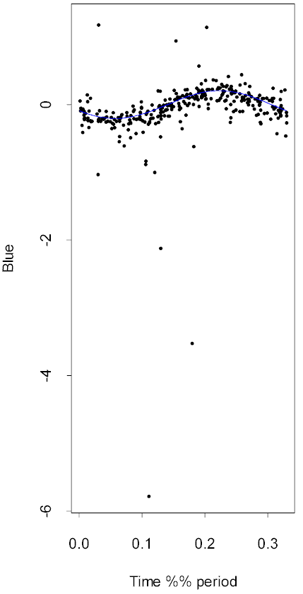

| / Home |
Keywords: time series, sinusoid signal, discrete spectra, outliers
The data gives observations on the magnitude of a RR Lyrae variable star made from the Mount Stromlo Observatory near Canberra in Australia. Magnitudes were recorded separately for the blue and red bands. Observation times were irregularly spaced depending on sky conditions and the observation schedule. The observations were made as part of the MACHO project. This particular star is RRc Lyrae star number 1263, a category 1 star with a symmetric signal.
| Variable | Description | ||
| Time | Time of observation in days | ||
| Blue | Differential magnitude in the blue band from 4500 to 6300 Angstroms | ||
| BlueSD | Standard deviation of the blue-band observation. A value of -99 indicates missing and negative values indicate unreliable observations. | ||
| Red | Differential magnitude in the red band from 6300 to 7600 Anstroms | ||
| RedSD | Standard deviation of the red-band observation. A value of -99 indicates missing and negative values indicate unreliable observations. | ||
The MACHO project monitors millions of stars every night with a dedicated telescope at Mount Stromlo Observatory. The collaboration is probing the halo of our galaxy in order to detect dark matter in the form of Massive Compact Halo Objects - MACHOs. These are astronomical bodies that emit negligible visible light, such as dwarf or neutron stars, large planets, and black holes. Detection of a MACHO is achieved by observing its gravitational lensing effect on a chance background star as the MACHO crosses near the line of sight between the observer and this star. In order to detect a sufficiently large number of MACHOs, the project collects observations on an large number of distant stars over an extended period of time. Data are being collected daily over a 4-year period (weather permitting), on approximately 8 million stars in the Large Magellanic Cloud (LMC) and the bulge of the Milky Way.
This database is a valuable resource for many other types of astronomical research. It is the most comprehensive catalog of stars in the LMC and contains stars much dimmer than those covered by previous surveys. Temporal coverage is unusually long compared to most star surveys, which permits a comprehensive study of star variability, including long periods and transient phenomena. About 40,000 variable stars have been observed in the LMC and a similar number in the galactic bulge.
Variable stars are stars for which the intensity of the emitted energy changes over time; for periodic variable stars the change of intensity is periodic over time. Common types of periodic variable stars include eclipsing binaries, RR Lyraes, and Cepheids. RR Lyrae stars have periods in the range 0.2 to 0.9 days. The brightness changes is caused by periodic pulsation (contraction and expansion) of the stars and their outer layers. There are two common types, RRab stars which have an asymmetric signal and RRc stars which have a symmetric signal.
There are numerous additional types of variable stars, and each of the categories above contains subcategories. For example, Beat Cepheids and Beat RR Lyrae oscillate at more than one frequency. Different classes of variable stars can be located in different regions of a plot of magnitude versus temperature or spectral type. For example, RR Lyraes and Cepheids lie on a strip called the "instability strip." Different types of variable curves are classified also on the basis of the shapes of their light curves and the relationships of shapes to period, for example. As well as being important for studies of stellar structure and evolution, these classes are used to determine distances on a cosmic scale by means of the relationship of their periods to their magnitudes.
Observations of these stars are typically made at rather irregular times, depending on observation schedules and sky conditions. Different observations have differing errors. All this makes determination of the periods and the shapes of the corresponding phased light curves an interesting statistical problem.
Data file (tab-delimited text)
| Hall, P., Reimann, J., and Rice, J. (1999). Nonparametric estimation of a periodic function. Technical Report 562, July 1999, Department of Statistics, University of California, Berkely. |
| Reimann, J. D. (1994). Frequency estimation using unequally-spaced astronomical data. PhD Thesis, University of California, Berkeley. |
| The data and background information were down-loaded from the WWW page Variable Stars: A Brief Tour of the Menagerie, by John Rice, University of California, Berkeley. Data were originally provided by Kem Cook of the Institute of Geophysics and Planetary Physics at Lawrence Livermore National Laboratories. |
An ordinary time series plot of the data appears to show no pattern, even excluding the many outliers. However the star has a period of about 0.33 days (which is much less than the average interval between observations). Here is the data in the blue band wrapped around the period, with the best fitting sinusoid curve superimposed. The sinosoid signal was fitted using the mmfreq function to allow for the outliers.

|
Home - About Us -
Contact Us Copyright © Gordon Smyth |